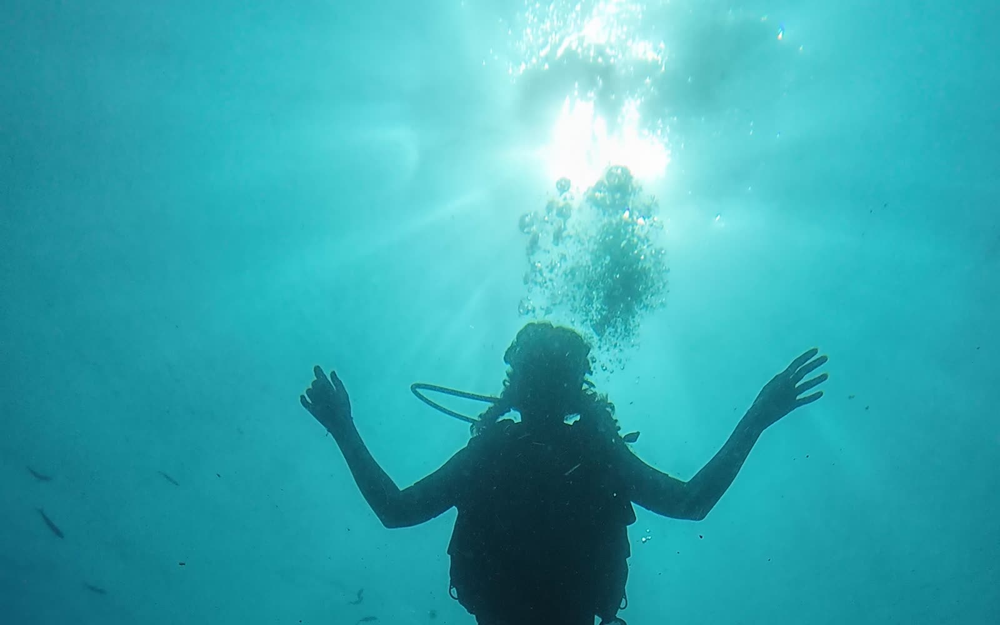

First step down
Just below your Open Water limit: checking your air more often, and how depth changes your no-decompression time.

Home / SSI courses / Deep and Nitrox
The two specialties that really change your diving: 40 metres at Sail Rock, and longer bottom times on every dive. Together they make the SSI Specialty Diver course — two days, four dives, 13,500฿.

Sail Rock · down to 40 m
Our pick after Open Water
SSI awards the Specialty Diver rating for any two specialties. Of all the options, Deep and Enriched Air Nitrox are the two that genuinely extend what you can do — which is why we recommend them as the next step after Open Water.
The course
The Deep dives go down in three stages, so each new depth feels familiar before you go further. All of them happen at Sail Rock, whose walls drop to a sandy bottom at 40 metres.
Just below your Open Water limit: checking your air more often, and how depth changes your no-decompression time.
Planning your gas, noticing narcosis in yourself, and watching the colours fade as the light changes.
Down to the sand at the base of the pinnacle, with a careful ascent and safety stop on the way up.
You analyse your own tank, label it and plan the dive for its mix — then enjoy the longer bottom time.

The classroom is the boat
Theory, seriously
In these courses the theory really matters, and we treat it that way. We use the hour-long ride out to Sail Rock and the surface interval between dives to go through Deep and Nitrox theory, with the sea in front of you.
On the last day, as with our Open Water courses, we go back to the shop after the boat for the written exam, and use it to clear up any last questions. Boris, our lead instructor, usually teaches these courses himself when they are in English or Spanish.
Separately
If you only want one of the two, each specialty can be taken on its own.
2 days · SSI
The three Deep dives down to 40 metres at Sail Rock, with the Deep theory and exam.
2 days8,500฿
BookTheory · SSI
The Enriched Air Nitrox certification with theory and exam, no dives needed.
Theory4,500฿
BookTheory + 2 dives · SSI
The same certification plus two dives on nitrox at Sail Rock, to put it into practice straight away.
With 2 dives7,500฿
BookQuestions
The Specialty Diver course with Deep and Nitrox together is 13,500฿. Separately, Deep is 8,500฿, and Nitrox is 4,500฿ for the theory only or 7,500฿ with two dives. Equipment, nitrox tanks and lunch are included; underwater camera rental is 600฿.
SSI gives you the Specialty Diver rating when you complete two specialty courses. We recommend Deep and Nitrox because they are the two that most extend the diving you can do afterwards.
Down to 40 metres, the limit for recreational diving. At Sail Rock that means you can reach the sandy bottom at the base of the pinnacle.
Nitrox, or enriched air, has more oxygen and less nitrogen than normal air. You absorb less nitrogen, which means longer no-decompression times and shorter surface intervals — very useful on a day with several dives. It does not let you dive deeper; in fact the course teaches you the maximum depth for each mix.
An Open Water Diver certification and a minimum age of 15.
Usually Boris, our manager and lead instructor, when the course is in English or Spanish. He has been a dive professional since 2015 and has more than 5,000 dives.
Mostly on the boat: during the hour-long ride out to Sail Rock and the surface interval between dives. On the last day we finish at the shop with the written exam and time for any final questions.
Tell us your certification level and your dates on WhatsApp, and we will tell you which option fits best.
See also the Advanced Open Water course or all our courses.